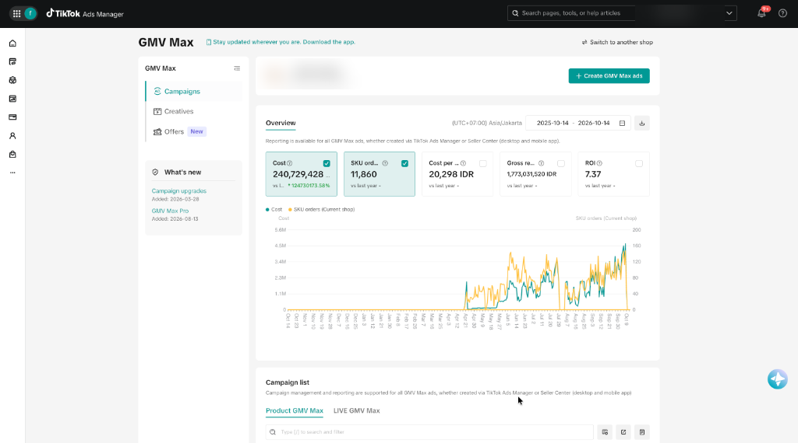
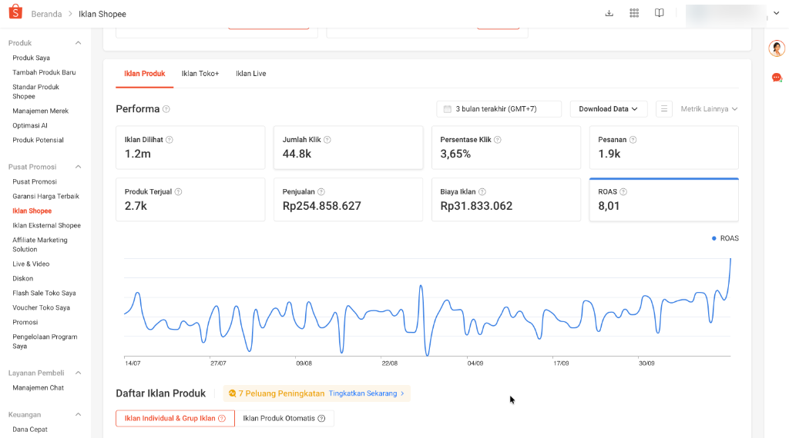
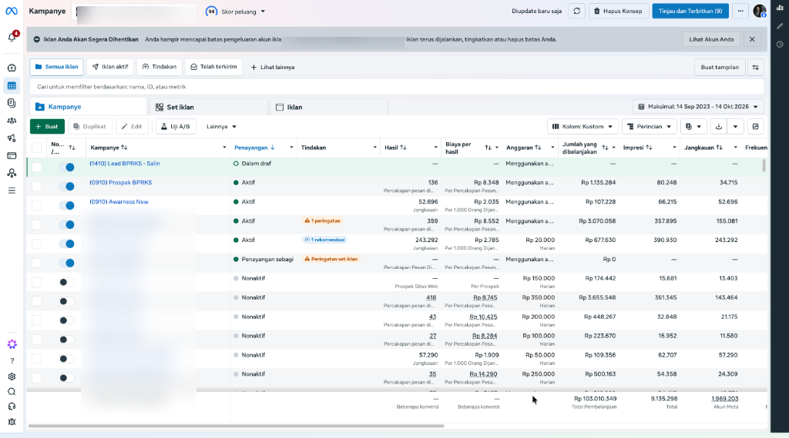

● TikTok GMV Max
Skalasi 1 Tahun: Menghasilkan Rp1,77 Miliar GMV dengan 11.860 Pesanan
7.37x
ROI Konsisten
Rp1,77 Miliar
Gross GMV
11.860
SKU Orders
Problem:
Biaya akuisisi fashion wanita fluktuatif dan cepat mengalami creative fatigue pada audiens jenuh.
Peran Saya:
Mengelola struktur kampanye GMV Max, alokasi budget, penguncian target CPO (Rp20.298/order), optimasi bidding, dan kurasi matriks 3.478 video kreator afiliasi mass-authorization. (Catatan: Rp127 Juta GMV per single video merupakan hasil kreator afiliasi yang didorong skala iklannya, bukan produksi video saya).
Okt 2025 – Okt 2026
Ad Spend: Rp240,7 Juta
Dashboard TikTok GMV Max — Nuril Shoes (Rp1,77 Miliar GMV)

● Sinergi Omnichannel
Pertumbuhan 90 Hari: Rp765 Juta Omzet via Shopee Ads & TikTok GMV Max
7.95x
Blended ROAS
Rp765 Juta
Omzet Gabungan
6.210
Total Pesanan
Problem:
Kategori biji kopi specialty membutuhkan sinergi antara penemuan produk di TikTok dan repeat order di Shopee.
Peran Saya:
Merancang alokasi budget lintas kanal, setup Bidding 2-Tahap di Shopee (Tahap 1 Auto learning → Tahap 2 Target ROAS), serta monitoring kestabilan CPO di TikTok GMV Max.
Jul – Okt 2026 (90 Hari)
Total Spend: Rp96,2 Juta
Dashboard Sinergi — Shopee Ads (Rp255jt) & TikTok (Rp510jt)

Jasa Finansial: 9.719 Leads WhatsApp via 194 Kampanye Meta Ads (CPL Rp11.475)
9.719
Leads WA Baru
5,8 Juta
Jangkauan Warga
Rp11.475
Avg Cost/Lead
Problem:
Dibutuhkan leads calon debitur pinjaman gadai BPKB yang berdomisili sesuai jangkauan kantor cabang di Jawa Barat.
Peran Saya:
Mengelola 194 kampanye Meta Ads (CTWA & LPWA Scalev), penargetan geografis presisi (Tasikmalaya, Garut, Ciamis, Bandung), kontrol CPL harian ketat (banyak kampanye terkunci di Rp5.000–8.000), dan sinkronisasi berkala ke tim sales cabang.
Hasil Performa:
Akumulasi 9.719 leads WhatsApp terverifikasi dengan efisiensi biaya luar biasa (CPL Rp11.475 vs rata-rata industri Rp25.000+) dari total pengelolaan anggaran iklan Rp111,5 Juta.
194 Kampanye Meta
Ad Spend: Rp111,5 Juta
Dashboard Meta Ads — Akun BPRKS Tasikmalaya (Rp111,5 Juta Spend)
